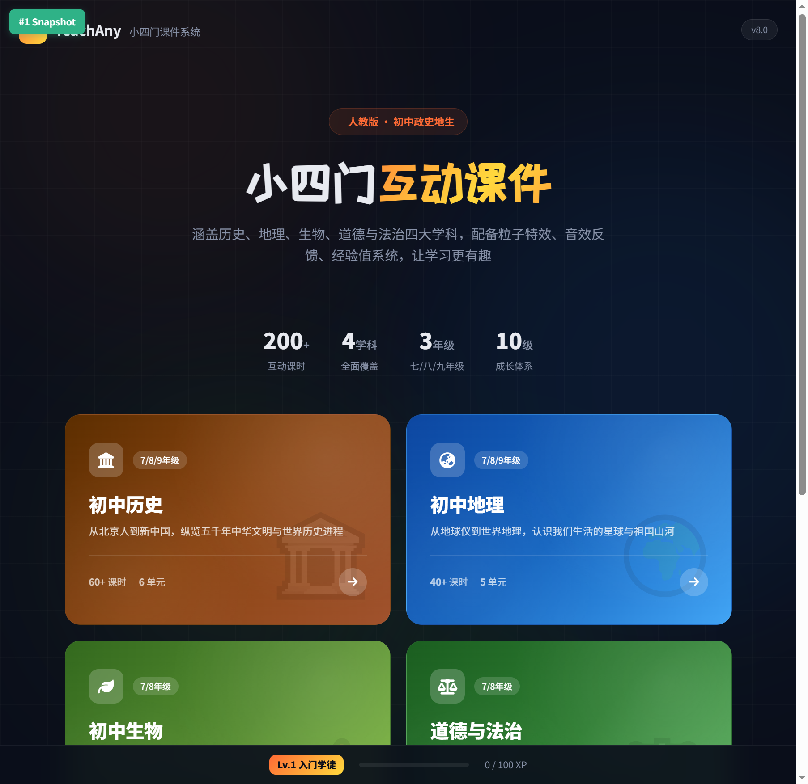
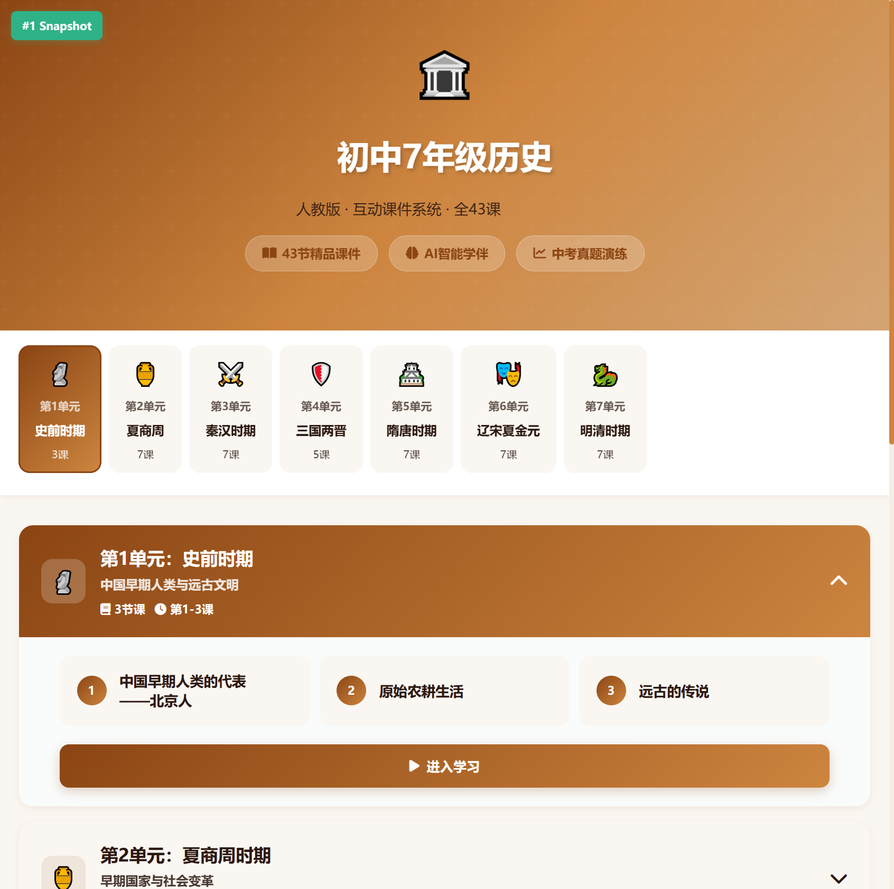
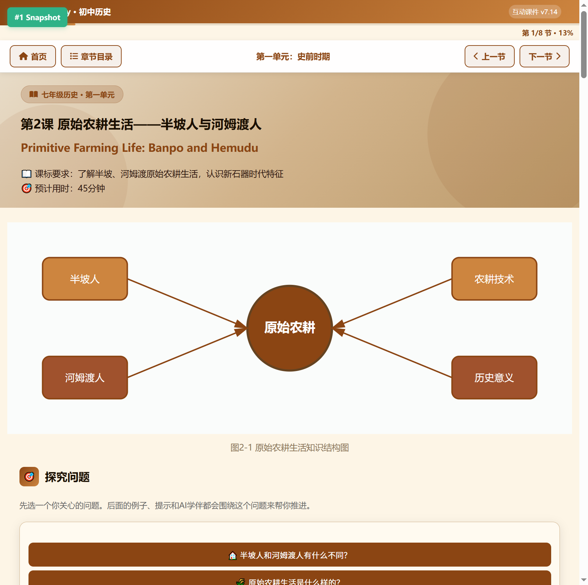
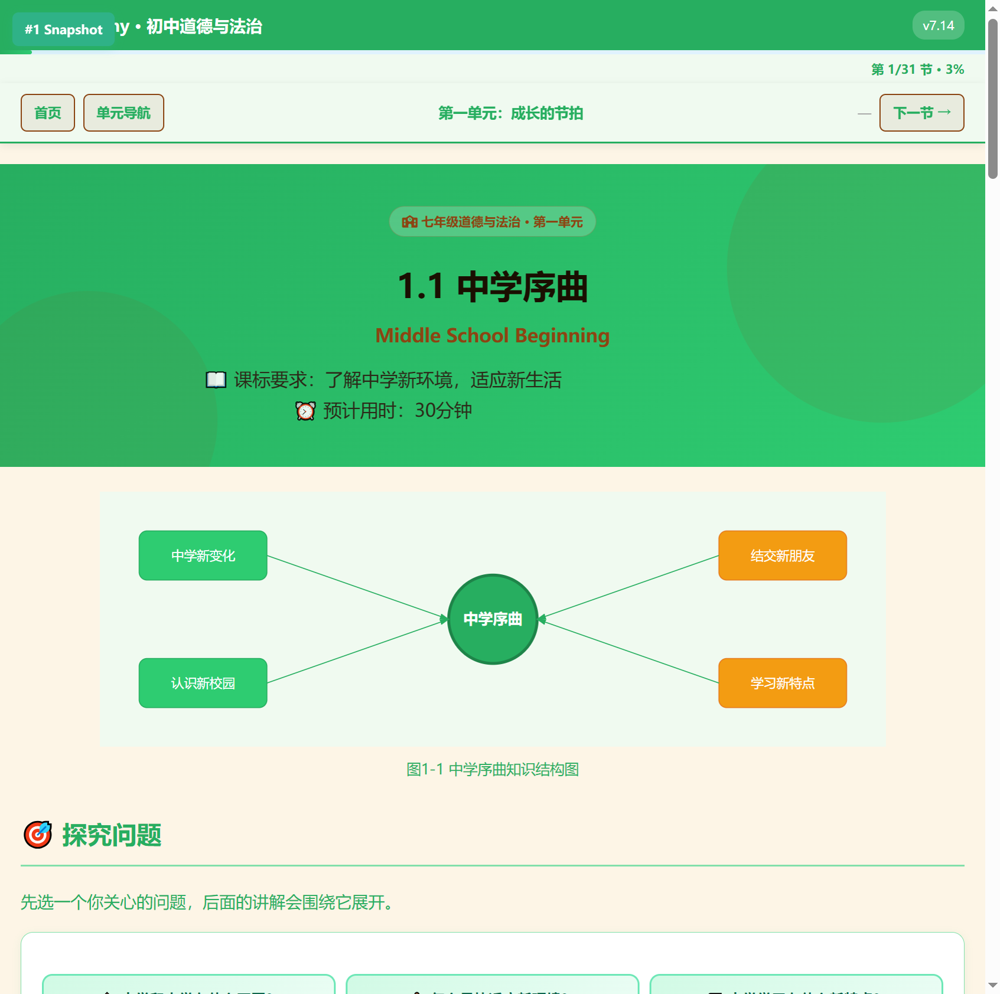
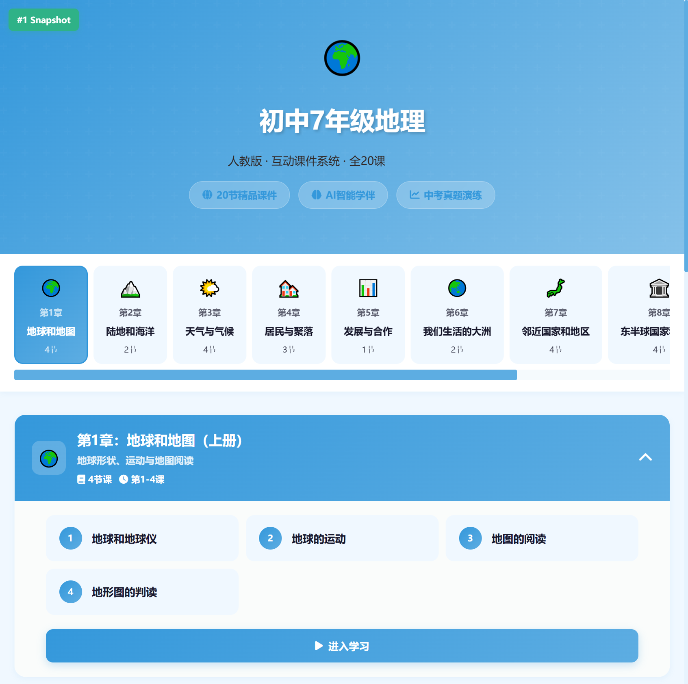
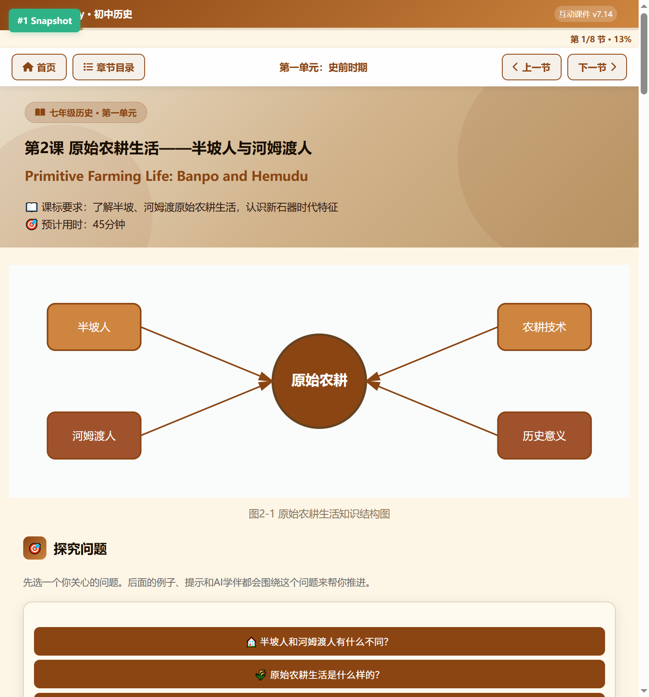

以顶级网站设计师、美术设计师、游戏设计师的多维视角，对人教版初中政史地生互动课件平台进行系统性设计审查，涵盖美术表现、操作体验、课件内容、游戏设计四大维度，对接 2022 新课标与中考命题趋势。
核心发现与优先级概览，帮助决策者快速把握优化方向
window.mascotEngine 钩子但从未实现，情感锚点完全缺失

从美术、操作、内容、游戏、技术五个维度评估当前状态（满分 10 分）


与主流教育/游戏化产品对比，明确差距与可借鉴方向
| 维度 | TeachAny 现状 | Duolingo | Khan Academy | 差距 | 可移植创意 |
|---|---|---|---|---|---|
| 吉祥物 | 有钩子无实现 | Duo 猫头鹰 12 态表情 | 无 | 高 | 设计"小四"书童形象，学科变装 |
| PBL 闭环 | 仅 XP | 积分+徽章+联赛排行榜 | 积分+徽章+技能树 | 高 | 徽章系统+成就墙+进度地图 |
| 答题反馈 | 粒子+音效+XP | 庆祝动画+连击火焰 | 进度环+ Mastery | 中 | 答错吉祥物鼓励+连击倍率 |
| 内容结构 | 8 段统一模板 | 碎片化课程+个性化 | 视频+练习+知识图谱 | 高 | 学科差异化模板+分步解锁 |
| 进度系统 | 步骤条 | 连续打卡+技能等级 | Mastery 进度环 | 中 | 环形进度+里程碑+技能树 |
| 视觉统一 | 深浅色割裂 | 统一明亮风格 | 统一简洁风格 | 高 | 平滑过渡或统一深色系 |
视觉风格统一性、配色辨识度、字体层级、IP 吉祥物、材质精致度、插图质量
index.html 的 :root 变量与各学科 shared/styles.css 中的背景色变量。建议在学科页顶部增加 80px 高的深色品牌栏过渡条，使用 linear-gradient(180deg, var(--bg-dark), var(--bg-light)) 实现自然过渡。
#b8860b、地理深空蓝 #1e88e5、生物翠绿 #2e7d32、道法紫罗兰 #7b1fa2，每色系含 5 层明度梯度（50/100/200/400/700）shared/styles.css 中定义 --subject-primary 到 --subject-700 五级变量。首页 index.html 的学科卡片使用对应主色。确保对比度 ≥ 4.5:1（WCAG AA）。
window.mascotEngine 钩子但从未实现，情感锚点完全空缺shared/mascot.js 实现表情状态机。在 scripts.js 中已有的 if (window.mascotEngine) 钩子处接入。表情触发：答对→庆祝/开心，答错→鼓励/思考，连击→兴奋，升级→骄傲。
<figure> 信息图区域。可使用 inline SVG 绘制简单图表（时间轴、对比表、流程图），无需引入额外库。复杂图示可使用 GenerateImage 生成插画素材。
index.html 的学科卡片区域为 CSS Grid：grid-template-columns: repeat(4, 1fr); grid-auto-rows: minmax(180px, auto)，为不同卡片设置 grid-column: span 2 实现大小组合。
微交互覆盖度、进度系统、答题反馈、导航回溯、移动端适配、错误恢复
transform: scale(0.96))+涟漪效果，选项卡切换有滑动过渡，卡片悬停有上浮+阴影shared/styles.css 中添加通用交互类：.btn:hover { transform: translateY(-2px); box-shadow: ... }、.btn:active { transform: scale(0.96) }。全局增加 :focus-visible 样式用于键盘导航。
index.html 增加学科进度地图区域，使用 SVG 绘制节点连线。在 scripts.js 中读取 localStorage 的 teachany_gamestate 计算完成百分比，动态更新环形进度。
scripts.js 的答题判定逻辑中扩展：答错时调用 mascotEngine.show('encourage')，显示提示卡片。连击 ≥5 时在 document.body 添加 .combo-fire 类触发火焰粒子效果。
<header> 下方增加 <nav class="breadcrumb"> 面包屑。在 scripts.js 中添加 scroll 监听，当滚动超过 300px 时显示返回顶部按钮（position: fixed; bottom: 2rem; right: 2rem）。
styles.css 的 @media (max-width: 768px) 中增加 .mobile-toolbar { position: fixed; bottom: 0; ... }。所有可点击元素添加 min-width: 44px; min-height: 44px。使用 touchstart/touchend 监听滑动手势。
对接 2022 新课标核心素养，按学科差异化设计内容模板，优化中考应试与认知负荷
<div class="competency-tags"> 区域，包含对应素养的标签卡片。参考课标：历史五大素养（唯物史观/时空观念/史料实证/历史解释/家国情怀），地理四大素养（人地协调观/综合思维/区域认知/地理实践力）[1]。
当前四学科使用完全相同的 8 段式模板，仅换配色与 emoji。建议为每门学科定制差异化内容模板：
<section class="timeline-anchor"> 年代尺区域（SVG 绘制）。在正文前增加 <section class="source-reading"> 史料研读区域。修改 01_初中历史/七年级/shared/styles.css 增加对应样式。
<div class="interactive-map"> 区域，使用 SVG 地图 + <area> 热点或 JS 点击事件。在 02_初中地理/七年级/shared/styles.css 中增加双栏布局样式 .dual-column { display: grid; grid-template-columns: 1fr 1fr; }。
<section class="lab-task"> 实验模块区域。使用 inline SVG 绘制细胞剖面图，添加 onclick 交互热点。在 03_初中生物/七年级/shared/styles.css 中增加实验记录表格样式。
<section class="scenario-theater"> 情境剧场区域。设计分支叙事结构（选择不同立场→不同分析路径）。在 04_初中道法/七年级/shared/styles.css 中增加角色卡片和讨论区样式。建立时政素材库 JSON 文件供动态加载。
<div class="question material-analysis">（材料分析）、<div class="question chart-reading">（图表判读）、<div class="question open-ended">（开放论述）。开放题可设计"参考要点 + 自评"机制。
04_初中道法/shared/current-affairs.json 数据文件，按月份和主题组织。在道法课件中增加 <div class="current-affair-loader"> 区域，JS 动态加载时政素材。支持按考点关键词匹配。
02_初中地理/shared/map-training/ 目录，包含 SVG 交互式地图模板。在地理年级首页增加"读图训练"入口卡片。使用 <svg> + onclick 实现可点击标注和即时判分。
shared/search-index.json 关键词索引文件（关键词 → 课件路径 + 教材页码）。在品牌栏增加搜索图标，点击弹出搜索面板。使用 JS filter() 实现即时检索。
scripts.js 中增加 Section 解锁逻辑：前测完成 → 正文 classList.remove('locked')。在 HTML 中为次要内容添加 <details><summary> 折叠组件。为关键概念创建 .concept-card 样式。
data-branch 属性，JS 根据探究问题选择显示对应分支 document.querySelectorAll('[data-branch="A"]').forEach(el => el.style.display = 'block')。
<div class="narrative-intro">，用第一人称/第二人称视角引入知识点。叙事文本与知识点用不同样式区分（叙事用斜体引言块，知识点用正文卡片）。
PBL 闭环、连击爽感、徽章/打卡/解锁、吉祥物情感、等级体系、XP 规则
scripts.js 中扩展 teachany_gamestate 对象，增加 badges: [] 字段。创建 shared/badges.js 定义徽章规则与图标。在首页增加"成就墙"入口，展示徽章网格。排行榜可选使用 localStorage 模拟（同设备多用户）或预留后端接口。
teachany_gamestate 中增加 streak: { count, lastDate, history: [] } 字段。每次学习时检查日期连续性。在首页增加日历热力图组件（SVG 绘制，类似 GitHub 贡献图）。课时解锁逻辑在年级首页的 index.html 中实现。
scripts.js 的 addXP() 函数中增加难度参数：addXP(amount, difficulty, isCombo)。连击倍率在 comboCount >= 3 时应用。在题目 HTML 中增加 data-difficulty="basic|intermediate|challenge" 属性。
shared/mascot.js 中实现成长系统：读取 teachany_gamestate.level 切换 SVG 形象。增加 lastVisitDate 字段，打开页面时检查间隔，超过 3 天触发提醒弹窗。参考 Duolingo Duo 的情感驱动设计[3]。
scripts.js 的升级逻辑中增加 CSS 动画类 .rank-up-animation。创建 rank-showcase.html 称号展示页，使用 SVG 绘制各等级印章。在首页增加"我的称号"入口卡片。
以顶级设计师视角提出的 5 个非凡创新方案，附实现路径与核心素养价值
概念：3D 年代尺横向展开，学生"穿越"到特定朝代，通过史料解密推进学习。每个朝代是一个可探索的 3D 场景入口，点击进入后呈现该时代的关键事件、人物、文物
实现：CSS 3D transform 构建年代尺透视效果 + SVG 时间轴 + 角色对话框。各朝代入口用渐变色块区分（先秦青铜色、秦汉玄色、隋唐金色、宋青色、明清朱红色）
价值：强化时空观念核心素养，让历史"活起来"。学生不再死记年代，而是在空间中"行走"历史
适用课时：七年级中国古代史全册，每课作为一个时代入口
概念：WebGL 可旋转地球仪，点击区域进入该地区地理探索。地球仪上标注大洲大洋、气候带、板块边界，点击热点弹出区域信息卡片
实现：Three.js 地球模型（球体 + 纹理贴图）+ 热点标记（Sprite）+ 区域信息卡片（HTML overlay）。支持鼠标拖拽旋转、滚轮缩放
价值：强化区域认知与地理实践力。从"看地图"升级为"操控地球"，建立全球空间认知
适用课时：七年级上"陆地和海洋"、七年级下世界地理、八年级上"从世界看中国"
概念：真实案例呈现 → 学生担任"法官"做出裁决 → 多结局反馈 → 价值辨析。每个案例有 3-4 个裁决选项，不同选项导向不同的法律/道德分析路径
实现：分支叙事 JSON 数据结构 + 角色卡片 UI + 投票/选择机制 + 结局反馈卡片。案例库可持续扩充
价值：强化法治观念与责任意识，实现知行合一。从"被动接受"到"主动裁决"，深度参与价值判断
适用课时：八年级下宪法专册、九年级法治专题、七年级下"走进法治天地"
概念：显微镜视角探索细胞结构，点击细胞器了解功能，可做虚拟实验（如"观察质壁分离""探究光合作用条件"）
实现：SVG/Canvas 绘制细胞剖面图（可缩放模拟显微镜倍率）+ 交互热点（点击细胞器弹出信息卡）+ 实验模拟（参数调节 + 结果动画）
价值：强化生命观念与探究实践。将抽象的微观世界具象化，让"看不见"的概念"可操作"
适用课时：七年级上"细胞"、七年级下"人体生理"、八年级下"遗传与变异"
概念：统一吉祥物贯穿全平台，12 态表情 + 学科变装 + 等级成长 + 陪伴对话。Lv1 小书童 → Lv10 状元郎，每次升级有形象变化
实现：SVG 动画角色（CSS animation 驱动表情切换）+ 表情状态机（JS 根据用户行为触发）+ localStorage 成长记录 + 对话气泡组件
价值：建立情感锚点，提升长期留存。参考 Duolingo Duo 猫头鹰的成功经验，让学习不再孤独
适用范围：全平台所有页面，品牌栏、答题反馈、首页、课件页均有吉祥物出现
P0 立即执行（影响所有用户）、P1 重点提升（提升体验深度）、P2 长期演进（锦上添花）

